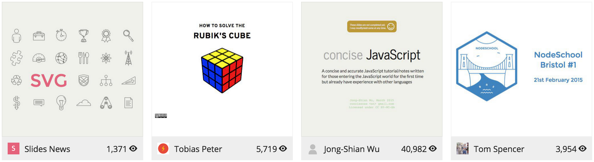

Reveal.js
An HTML5 Presentation Framework
Outbrain developer lunchbox demo by: Eric Xu
Advantages
- Power of modern web browsers.
- More flexibility and control.
- Optimized for touch devices.
- Better slide organization with 2d layout.
- Host slides on Github to see change history.
- Syntax highlighting with code samples.
Limitations
- Text overlays on top of graphics.
- Dynamic actions on slides.

Agenda
- Go over some key features of Reveal JS.
- See how to get started and how to host slides on Github.
Vertical Slides
Slides can be nested inside of each other.
Basement Level 1
Nested slides are useful for adding additional detail underneath a high level horizontal slide.
Basement Level 2
That's it, time to go back up.
Slide Transition Styles
You can select from different transitions, like:
None -
Fade -
Slide -
Convex -
Concave -
Zoom
Color Themes
Reveal.js comes with a few themes built in:
Black (default) -
White -
League -
Sky -
Beige -
Simple
Serif -
Night -
Moon -
Solarized
Fragments
Hit the next arrow...
... to step through ...
... a fragmented slide.
Fragment Styles
There's different types of fragments, like:
grow
shrink
roll-in
fade-out
current-visible
highlight-red
highlight-blue
Support for SVG Graphics

Much more

Getting Started
- Download or clone Reveal JS from Github.
- Open the index.html page in a text editor.
- Customize the content inside section elements.
Getting Started
- Download or clone Reveal JS from Github.
- Open the index.html page in a text editor.
- Customize the content inside section elements.
Getting Started
- Download or clone Reveal JS from Github.
- Open the index.html page in a text editor.
- Customize the content inside section elements.
For Non-Coders
There's a fully-featured visual editor for creating presentations at http://slides.com.
Hosting On Github Project Pages
- Create a new github repository, or use an existing one.
- git checkout –orphan gh-pages.
- Remove all files and subdirectories from new ‘gh-pages’ branch.
- Import all Reveal JS files and subdirectories.
- Commit, then git push -u origin gh-pages.
- Presentation will be available at https://{user_name}.github.io/{project_name}
Other HTML5 Presentation Frameworks
- Impress.js (infinite canvas; 3d space)
- Bespoke.js (presentation micro framework)
- Deck.js
Thanks!
Questions?
Point of View
Press ESC to enter the slide overview.
Hold down alt and click on any element to zoom in on it using zoom.js. Alt + click anywhere to zoom back out.
Touch Optimized
Presentations look great on touch devices, like mobile phones and tablets. Simply swipe through your slides.
Slide Backgrounds
Set data-background="#dddddd" on a slide to change the background color. All CSS color formats are supported.
Image Backgrounds
<section data-background="image.png">Tiled Backgrounds
<section data-background="image.png" data-background-repeat="repeat" data-background-size="100px">Video Backgrounds
<section data-background-video="video.mp4,video.webm">Background Transitions
Different background transitions are available via the backgroundTransition option. This one's called "zoom".
Reveal.configure({ backgroundTransition: 'zoom' })Background Transitions
You can override background transitions per-slide.
<section data-background-transition="zoom">Pretty Code
function linkify( selector ) {
if( supports3DTransforms ) {
var nodes = document.querySelectorAll( selector );
for( var i = 0, len = nodes.length; i < len; i++ ) {
var node = nodes[i];
if( !node.className ) {
node.className += ' roll';
}
}
}
}
Code syntax highlighting courtesy of highlight.js.
Marvelous List
- No order here
- Or here
- Or here
- Or here
Fantastic Ordered List
- One is smaller than...
- Two is smaller than...
- Three!
Tabular Tables
| Item | Value | Quantity |
|---|---|---|
| Apples | $1 | 7 |
| Lemonade | $2 | 18 |
| Bread | $3 | 2 |
Clever Quotes
These guys come in two forms, inline:
“The nice thing about standards is that there are so many to choose from”
and block:
“For years there has been a theory that millions of monkeys typing at random on millions of typewriters would reproduce the entire works of Shakespeare. The Internet has proven this theory to be untrue.”
Intergalactic Interconnections
You can link between slides internally, like this.
Speaker View
There's a speaker view. It includes a timer, preview of the upcoming slide as well as your speaker notes.
Press the S key to try it out.
Export to PDF
Presentations can be exported to PDF, here's an example:
Global State
Set data-state="something" on a slide and "something"
will be added as a class to the document element when the slide is open. This lets you
apply broader style changes, like switching the page background.
State Events
Additionally custom events can be triggered on a per slide basis by binding to the data-state name.
Reveal.addEventListener( 'customevent', function() {
console.log( '"customevent" has fired' );
} );
Take a Moment
Press B or . on your keyboard to pause the presentation. This is helpful when you're on stage and want to take distracting slides off the screen.